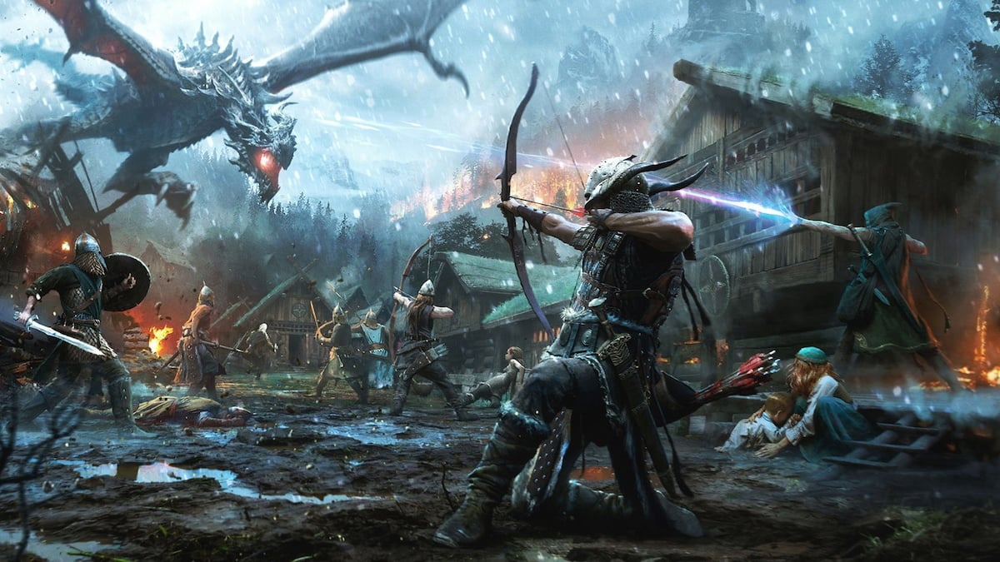

Your Imagination Is Your Limit!



The game centers on the relationship between two teens, Chloe and Max, that at its core is the sort of unbreakable bond. The game had episodes and secrets to uncover. You play as the character Max with her time travel powers. People loved the art direction they went and thought the graphics were unique. The original Life Is Strange reached over 20 million players in 2023. Furthermore, it’s a simple adventure story game, with easy movements and selection controls that really anyone can play. Life is Strange has an incredible rewind mechanic, which lets players alter events dramatically. It’s really up to you on how you want to play the game, the game has many endings. You choose what to say and how you behave. There is an investigative puzzle element to the game that makes you think about every move you make.
The Witcher is a mesmerizing blend of high-fantasy storytelling, intricate characters, and a moral ambiguity game. The Witcher franchise has captured the hearts of gamers and book lovers. The witcher's main character has superhuman physical prowess, regenerative capabilities, and magic. The game has sold more than 75 million copies in total. But the game took a while to be made but after the books and comics had amazing success, they decided to make the game. Players control Geralt, a monster slayer for hire known as a Witcher, and he searches for his adopted daughter, who is on the run from the otherworldly Wild Hunt. Players battle the game's many dangers with weapons, and magic and interact with other characters and NPCs. You complete quests to acquire experience points and gold, that are used to increase Geralt's abilities and purchase equipment. The game's story has three possible endings, determined by the player's choices in the game.The Witcher is a mesmerizing blend of high-fantasy storytelling, intricate characters, and a moral ambiguity game. The Witcher franchise has captured the hearts of gamers and book lovers. The witcher's main character has superhuman physical prowess, regenerative capabilities, and magic. The game has sold more than 75 million copies in total. But the game took a while to be made but after the books and comics had amazing success, they decided to make the game. Players control Geralt, a monster slayer for hire known as a Witcher, and he searches for his adopted daughter, who is on the run from the otherworldly Wild Hunt. Players battle the game's many dangers with weapons, and magic and interact with other characters and NPCs. You complete quests to acquire experience points and gold, that are used to increase Geralt's abilities and purchase equipment. The game's story has three possible endings, determined by the player's choices in the game.
Tiny Tina's Wonderlands is a role-playing and first-person shooter video game. It's a spin-off in the Borderlands series and a sequel to Tiny Tina's Assault on Dragon Keep. The game is set at a world fantasy-themed table, that you role-play at. It was the second-best-selling retail video game in the United Kingdom in its week of release. Players can have up to four players join them. You can customize your character from skin, hair, and clothes. The game has quests you do to get further in the story, and to get loot. They have vending machines to buy items and to upgrade your loot. The game is humorous and jokes with your character.